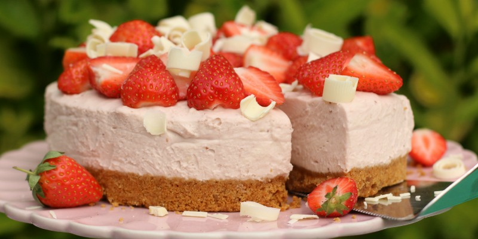
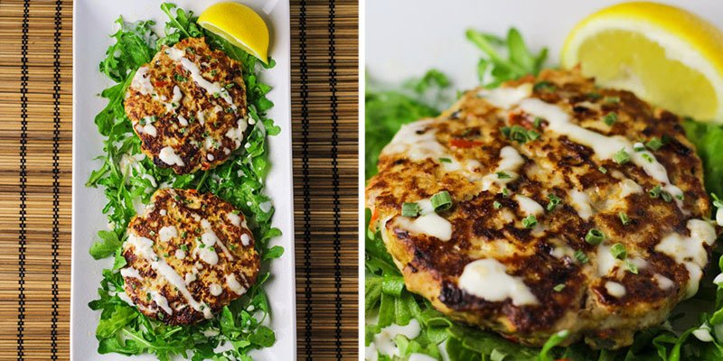

Cheesecake de fresas... delicioso..!!!
27/01/2018
Este cheesecake sin horno o conocido también como pastel de queso sin cocción, es realmente exquisito y muy fácil de preparar. Esta es la receta perfecta para cuando estás buscando un postre fácil de preparar y rico. Con una base de galletas de chocolate y la crema de un sabor único hacen que este postre sea un éxito.
Luisa Robles
Hay algún video de la preparación?
Ana Sánchez
Interesante pero no pusiste la receta
Una alternativa saludable de comer hamburguesas.
20/01/2018
Una hamburguesa bien hecha puede ser una comida tan sabrosa como un plato de restaurante. Pero, para eso, es necesario abandonar la conveniencia del fast food y de las hamburguesas congeladas - para una hamburguesa realmente rica, usted necesita hacer su bife de hamburguesa. El secreto para una hamburguesa deliciosa es equilibrar la carne magra con una carne con más grasa. Es muy importante traer grasa para el bife de hamburguesa, sino quedará muy seco y duro - y el punto ideal de la hamburguesa es húmedo y tierno
Carlos Castro
Excelente receta y fácil de preparar.
Roxanna Perez
Se puede utilizar repollo en lugar de lechuga.
Patrica Cordoba
De todas las receta esta me encanta.
Donde busco la receta